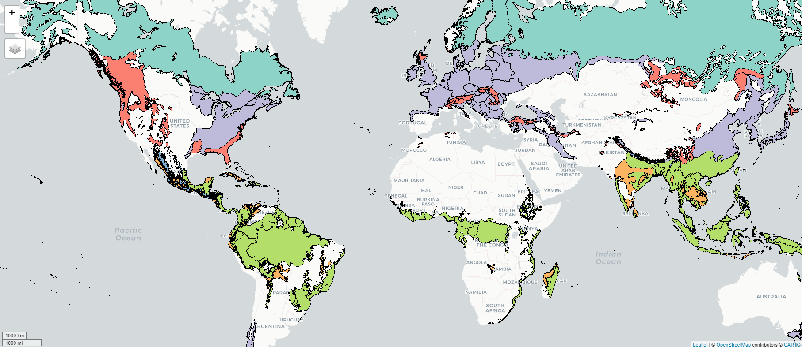
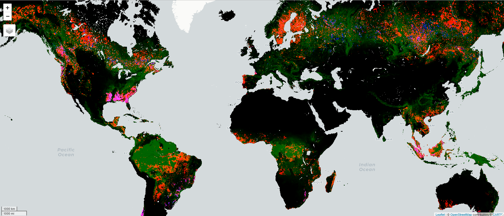
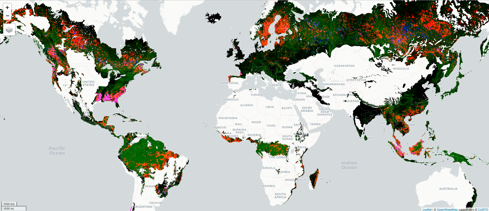

7 Re-implementing the logic of original study with a new code
We have not yet been able to successfully replicate the original study as their code does not run successfully and generates errors. We identified the origin of some errors and corrected them, but we remained stuck with Julia errors. We tried different computing environment : local, cloud servers and with several different configurations (Windows, Linux, different R, python and Julia versions, etc.), and with large amounts of CPUs and memory.
We believe that the computing sequence elaborated by this study authors is particularly complex because of the very large amount of data to be processed. We propose a different approach that seems more straight forward and use the same entry parameters as the original study.
Here we attempt to reproduce every analysis steps and parameters of the original study but to implement a different data processing strategy that:
implies less manipulations steps to be less error prone;
only relies on one language and configuration for local processing.
relies on cloud data processing for very big datasets: we leverage the cloud computing platform used by the authors to download their source data (Google earth engine) to do more than only data acquisition: we use it also to preprocess and combine the source data before download;;
takes advantage that the matching algorithm segments by country and biome to process the data in smaller batches that are easier to process on commonly accessible processing configurations.
containerize and archive our computing environement to enable any future researcher to reproduce it in the future.
Code
# We need the latest version of rnaturalearthif (!"rnaturalearth"%in%installed.packages() |packageVersion("rnaturalearth") <="0.3.2") { remotes::install_github("https://github.com/ropensci/rnaturalearth")}library(tidyverse)library(sf)library(tmap)library(geodata)library(rnaturalearth)library(units)library(terra)library(stars)library(arrow)if (str_ends(getwd(), "replication_report", negate =TRUE)) {setwd("replication_report")}
7.1 Fetch and prepare data from other sources than GEE
We gather data for national boundaries and biomes and combine it.
Code
if (file.exists("revamp/countries/countries.rds")) { countries <-read_rds("revamp/countries/countries.rds")} else {# Countries using geodata (ie. GADM), rnaturalearth is brokendir.create("revamp")dir.create("revamp/countries")# This data is from GADM which seems more complete and accurate countries <-world(resolution=2, level=0, path ="revamp/countries") countries <- countries %>%st_as_sf() %>%st_make_valid() %>%mutate(country_num =1:nrow(.), .before = GID_0)# Fetch data from rnaturalearth for continents countries2 <-ne_download(scale =10,type ="countries",category ="cultural",destdir ="revamp/countries",load =TRUE,returnclass ="sf") country_continent <- countries2 %>%st_drop_geometry() %>%select(ADM0_A3, continent = CONTINENT) countries <- countries %>%left_join(country_continent, join_by(GID_0 == ADM0_A3)) %>%mutate(continent =case_when( NAME_0 =="Åland"~"Europe", # some territories are missing NAME_0 =="Bonaire, Saint Eustatius and Saba"~"North America", NAME_0 =="Caspian Sea"~"Europe", NAME_0 =="Christmas Island"~"Oceania", NAME_0 =="French Guiana"~"South America", NAME_0 =="Guadeloupe"~"North America", NAME_0 =="Kosovo"~"Europe", NAME_0 =="Martinique"~"North America", NAME_0 =="Mayotte"~"Africa", NAME_0 =="Paracel Islands"~"Asia", NAME_0 =="Réunion"~"Africa", NAME_0 =="South Sudan"~"Africa",.default = continent),continent =ifelse(continent =="Seven seas (open ocean)","Open ocean", continent))write_rds(countries, "revamp/countries/countries.rds")}# We prepare ecoregion polygons (only at first run, if not already done)if (!file.exists("revamp/aois/aois.gpkg")) {# Fetch biomesdir.create("revamp/biomes")if (!file.exists("revamp/biomes/wwf_biomes.zip")) { wwf_url <-paste0("https://files.worldwildlife.org/wwfcmsprod/files/", "Publication/file/6kcchn7e3u_official_teow.zip")download.file(wwf_url, "revamp/biomes/wwf_biomes.zip")unzip("revamp/biomes/wwf_biomes.zip", exdir ="revamp/biomes") }# Merge ecoregions with the same biome biomes <-st_read("revamp/biomes/official/wwf_terr_ecos.shp") %>%st_make_valid() %>%group_by(BIOME) %>%summarise()# Rename according to documentation and filter biomes <- biomes %>%rename(biome_num = BIOME) %>%mutate(biome_name =case_when( biome_num ==1~"Tropical & Subtropical Moist Broadleaf Forests", biome_num ==2~"Tropical & Subtropical Dry Broadleaf Forests", biome_num ==3~"Tropical & Subtropical Coniferous Forests", biome_num ==4~"Temperate Broadleaf & Mixed Forests", biome_num ==5~"Temperate Conifer Forests", biome_num ==6~"Boreal Forests/Taiga", biome_num ==7~"Tropical & Subtropical Grasslands, Savannas & Shrublands", biome_num ==8~"Temperate Grasslands, Savannas & Shrublands", biome_num ==9~"Flooded Grasslands & Savannas", biome_num ==10~"Montane Grasslands & Shrublands", biome_num ==11~"Tundra", biome_num ==12~"Mediterranean Forests, Woodlands & Scrub", biome_num ==13~"Deserts & Xeric Shrublands", biome_num ==14~"Mangroves",.default ="Unknown"), .before = geometry) my_biomes <- biomes %>%filter(biome_name %in%c("Tropical & Subtropical Moist Broadleaf Forests","Tropical & Subtropical Dry Broadleaf Forests","Tropical & Subtropical Coniferous Forests","Temperate Broadleaf & Mixed Forests","Temperate Conifer Forests","Boreal Forests/Taiga","Mangroves")) %>%mutate(biome_num =case_when( biome_name =="Tropical & Subtropical Moist Broadleaf Forests"~1, biome_name =="Tropical & Subtropical Dry Broadleaf Forests"~2, biome_name =="Tropical & Subtropical Coniferous Forests"~3, biome_name =="Temperate Broadleaf & Mixed Forests"~4, biome_name =="Temperate Conifer Forests"~5, biome_name =="Boreal Forests/Taiga"~6, biome_name =="Mangroves"~7))# Areas of interest (AOIs) combine countries and biomes aois <-st_intersection(countries, my_biomes) %>%mutate(area =st_area(.)) %>%arrange(area) # to start with the smallest for testing# save as geoparquetst_write(aois, "revamp/aois/aois.gpkg") } else { aois <-st_read("revamp/aois/aois.gpkg")}
Reading layer `aois' from data source
`C:\Users\fbede\Documents\Statistiques\PA_matching\replication_report\revamp\aois\aois.gpkg'
using driver `GPKG'
Simple feature collection with 364 features and 7 fields
Geometry type: MULTIPOLYGON
Dimension: XY
Bounding box: xmin: -179.9994 ymin: -55.97751 xmax: 179.9992 ymax: 71.41746
CRS: unknown
Areas of interest (biome segmented along national boundaries)
We obtain 364 polygons of country/biomes combinations.
We also download the data from (Curtis et al. 2018) on deforestation drivers, which is a raster data.
Code
# We only execute this onceif (!file.exists("revamp/drivers/curtis_et_al_orig.tif")) { science_url <-paste0("https://www.science.org/action/downloadSupplement?","doi=10.1126%2Fscience.aau3445&file=aau3445-data-s3.tif")download.file(url = science_url, destfile ="revamp/drivers/curtis_et_al_orig.tif",method ="curl")# load country + biome datadrivers <-rast("revamp/drivers/curtis_et_al_orig.tif") %>%project("epsg:4326") %>%writeRaster("revamp/drivers/drivers_curtis.tif")}
7.2 Move external data to GEE and prepare all information there
The first step of the data analysis workflow of Wolf et al. consisted in fetching data from Google Earth Engine. They downloaded each dataset (forest cover, forest loss, forest gain, elevation, slope, travel time and population density) as separate raster files to process them locally on their own computer. Because of the massive amount of such data, the subsequent steps in their analysis workflow are complex, rely from different languages, a large number of libraries (several of them now deprectated), fails to run and we are unable to debug it.
The Google Earth Engine can be leveraged to do much more than only downloading data, and therefore we plan to re-implement on this cloud environment the data preparation steps, instead of doing it locally on individual machines.
We use the R package rgee as an interface to Google Earth engine API (Aybar et al. 2020).
Code
# Sometime rgee does not find the right python env, so we specify itreticulate::use_python("C:/Users/fbede/AppData/Local/r-miniconda/envs/rgee")library(rgee) # accesses GEE through its python APIlibrary(rgeeExtra)ee_Initialize(user ="ndef", drive =TRUE, )dir.create("revamp/gee")
We start by uploading the country, biome and deforestation drivers’ data prepared in the previous step.
Code
# We add this manually, as we had issues with API auth. protocol for GSCdrivers_curtis <- ee$Image("projects/ee-fbedecarrats/assets/drivers_curtis")# We also load the AOIs manually due to the same problemif (!file.exists("revamp/aois/aois_shp.zip")) {dir.create("revamp/aois")st_write(aois, "revamp/aois/aois.shp") aoi_files =list.files(path ="revamp/aois", pattern ="aois.*", full.names =TRUE)zip(zipfile ="revamp/aois/aois_shp.zip", files = aoi_files)}aois_ee <- ee$FeatureCollection("projects/ee-fbedecarrats/assets/aois")# We get the colors used by R using tmaptools::palette_explorer()biome_fills <- ee$Image()$byte()$paint(featureCollection = aois_ee,color ="biome_num")biome_nation_borders <- ee$Image()$byte()$paint(featureCollection = aois_ee,color =1,width =1)r_map_palette <-c("b3de69", # light green: Tropical & Subtropical Moist Broadleaf Forests "fdb462", # light orange: Tropical & Subtropical Dry Broadleaf Forests"80b1d3", # blue: Tropical & Subtropical Coniferous Forest"bebada", # purple: Temperate Broadleaf & Mixed Forests"fb8072", # dark orange: Temperate Conifer Forests"8dd3c7", # turquois: Boreal Forests/Taiga"ffffb3") # yellow: MangrovesMap$addLayer(biome_fills, list(min =1, max =7, palette = r_map_palette)) + Map$addLayer(biome_nation_borders, list(palette ="000000"))

Diplay of biomes segmented by national boarders on google earth engine
8 Clip Hansen data with biome polygons
Instead of downloading and processing all the GFC data like Wolf and al., we instead keep only the data located within the perimeter of the biomes of interest.
Code
# Hansen/GFC -------------------------------------------------------------------gfc <- ee$Image("UMD/hansen/global_forest_change_2018_v1_6")# We save the output as image to display it in quartogfc_mask <- gfc$select("datamask")$eq(1)gfc_wolf <- gfc$updateMask(gfc_mask)Map$addLayer(gfc_wolf, list(bands =c("loss", "treecover2000", "gain"),max =c(1, 255, 1)))

GFC data exported by wolf to be processed on a local computer (green: tree cover in 2000, red: tree cover loss 2001-2018, blue: tree cover gain 2001-2012)
Code
# We save the output as image to display it in quartogfc_aois <- gfc_wolf$clipToCollection(aois_ee)Map$addLayer(gfc_aois, list(bands =c("loss", "treecover2000", "gain"),max =c(1, 255, 1)))

GFC data restricted to areas of study to export for matching (green: tree cover in 2000, red: tree cover loss 2001-2018, blue: tree cover gain 2001-2012)
9 Stack information as bands in a single raster
Wolf et al. downloaded each information source in a separate raster, that they later on joined. We find easier and less error-prone to stack all the information as bands of the same raster. The data might be downloaded in separate files for different national segment of each biome, but for the same regions, all the complementary information is attached to the same pixels with the same resolution (alias, a “clean” table).
Code
# This function takes as an enty a GEE FeatureCollections and returns an GEE# Image with 13 bands with forest cover, forest loss, year of forest loss, # elevation, slope, travel time to a city, population density, country number,# biome number, a dummy if it is a PA, or in a 10km distance of a PA, and the # WPDA ID number of the PA if it is a PA. prepare_gee_data <-function(ee_region) { gfc <- ee$Image("UMD/hansen/global_forest_change_2018_v1_6") gfc_mask <- gfc$select("datamask")$eq(1) gfc_masked <- gfc$updateMask(gfc_mask)# GFC data aoi_gfc <- gfc_masked$clipToCollection(ee_region) aoi_cover <- aoi_gfc$select("treecover2000")$reduceResolution(reducer = ee$Reducer$mean(), bestEffort =TRUE)$toInt() aoi_loss <- aoi_gfc$select("loss")$reduceResolution(reducer = ee$Reducer$mean(), bestEffort =TRUE)$toInt() aoi_lossyear <- aoi_gfc$select("lossyear") aoi_lossyear <- aoi_lossyear$updateMask(aoi_lossyear$neq(0))$reduceResolution(reducer = ee$Reducer$mode(maxRaw =20), bestEffort =TRUE)$toInt() aoi_image <- aoi_cover$addBands(c(aoi_loss, aoi_lossyear))# elevation # 28min aoi_image <- aoi_image$addBands(ee$Image("USGS/GTOPO30")) # Elevation aoi_image[[4]] <- aoi_image[[4]]$toInt32()# slope aoi_image <- aoi_image$addBands(ee$Terrain$slope(aoi_image[[4]])) aoi_image[[5]] <- aoi_image[[5]]$toInt()# travel_time aoi_image <- aoi_image$addBands( ee$Image("Oxford/MAP/accessibility_to_cities_2015_v1_0")) aoi_image[[6]] <- aoi_image[[6]]$toInt()# Population density gpw <-paste0("CIESIN/GPWv411/GPW_UNWPP-Adjusted_Population_Density/","gpw_v4_population_density_adjusted_to_2015_","unwpp_country_totals_rev11_2000_30_sec") aoi_image <- aoi_image$addBands(ee$Image(gpw)$select("unwpp-adjusted_population_density")) aoi_image[[7]] <- aoi_image[[7]]$focal_mean(radius =20e3,kernelType ="circle",units ="meters")$toInt()# We add countries and biomes reg_country_img <- aois_ee$filterBounds(ee_region$geometry())$reduceToImage(properties =list("cntry_n"), reducer = ee$Reducer$first()) aoi_image <- aoi_image$addBands(reg_country_img$toInt()) reg_biome_img <- aois_ee$filterBounds(ee_region$geometry())$reduceToImage(properties =list("biome_num"), reducer = ee$Reducer$first()) aoi_image <- aoi_image$addBands(reg_biome_img$toInt())# We add information on protected areas wdpa_reg <- ee$FeatureCollection("WCMC/WDPA/current/polygons")$filterBounds(ee_region$geometry())$select("MARINE == 0 $$ STATUS != 'Proposed' && GIS_AREA >= 1") wdpa_reg <- wdpa_reg$map(function(pa) {return(pa$set("PA", 1)) }) pa_footprint <-wdpa_reg$reduceToImage(properties =list("PA"),reducer = ee$Reducer$first())$toInt() pa_buffer <- pa_footprint$focal_max(10000, "circle", "meters") aoi_image <- aoi_image$addBands(c(pa_footprint, pa_buffer)) aoi_image <- aoi_image$addBands( wdpa_reg$reduceToImage(properties =list("WDPAID"),reducer = ee$Reducer$first())$toInt()) aoi_image <- aoi_image$addBands( wdpa_reg$reduceToImage(properties =list("STATUS_YR"),reducer = ee$Reducer$first())$toInt())# Deforestation drivers by Curtis et al. aoi_image <- aoi_image$addBands( ee$Image("projects/ee-fbedecarrats/assets/drivers_curtis")$toInt())# Forgot to add the ecoregs from WWF. Uploading them as provided by WWF wwf_ecoregs <- ee$FeatureCollection("projects/ee-fbedecarrats/assets/wwf_ecoregs") aoi_image <- aoi_image$addBands( wwf_ecoregs$reduceToImage(properties =list("ECO_ID"),reducer = ee$Reducer$first())$toInt())names(aoi_image) <-c("cover", "loss", "lossyear", "elev", "slope","travel_time", "pop_dens", "country_num", "biome_num","is_pa", "is_pa_buffer", "wdpa_id", "status_year", "driver", "ecoreg")# ADD CLIP /!\ aoi_image <- aoi_image$clipToCollection(ee_region)}
The previous code creates for each area of interest a raster with the following bands: cover, loss, lossyear, elev, slope, travel_time, pop_dens, PA, WDPA ID number, PA_status_yr, PA_buffer, country, biome.
Now we will iterate to download this raster in separated file, with one file per national segment of each biome of interest.
Code
# This loops over countries, but the data is only extracted for areas that# are within a biome of study.my_countries <-unique(aois$GID_0)country_tasks <-tibble(country = my_countries)# each country takes between less than 1 and 32 minutes to process. # The computations run in parallel.aois_ee <- ee$FeatureCollection("projects/ee-fbedecarrats/assets/aois")for (i in1:length(my_countries)) { GID <- my_countries[i]print(paste0(GID, " ", i, "/", length(my_countries))) aoi_country <- aois_ee$filter(paste0("GID_0 == '", GID,"'")) aoi_extract <-prepare_gee_data(aoi_country)#country_tasks$task[[i]] <- test <-ee_as_raster( aoi_extract, via ="drive", container ="rgee_country", lazy =TRUE,dsn =paste0("revamp/gee/", GID, ".tif"),skipEmptyTiles =TRUE, scale =1000,region = aoi_country$geometry())}# We fetch the data once it is readyfor (j in1:length(my_countries)) {ee_utils_future_value(country_tasks$task[[j]])}# This downloads the tifs for 201 national territories. Now we open them and store them to dir.create("revamp/tabular_country")for (k in1:length(my_countries)) { country_code <- country_tasks$country[k]print(country_code) my_tifs <-list.files(path ="revamp/gee", full.names =TRUE,pattern =paste0(country_code, ".*tif"))# There can be several tifs for 1 country, so we merge them country_df <-data.frame()for (my_tif in my_tifs) { my_rast <-rast(my_tif) my_df <-as.data.frame(my_rast) %>%filter(country_num >0& biome_num >0& is_pa_buffer !=1) country_df <-bind_rows(country_df, my_df) }write_parquet(country_df, paste0("revamp/tabular_country/", country_code, ".parquet"))rm(list =c("my_rast", "my_df", "country_df"))}# Here we have 1 file per country. We will consolidate all data into 1 single# file.df_files <-list.files(path ="revamp/tabular_country", full.names =TRUE)all_df <-read_parquet(df_files[1])for (l in2:length(df_files)) {print(l) this_df <-read_parquet(df_files[l]) all_df <-bind_rows(all_df, this_df)}# The data occupies about 8-10 Go in memorynrow(all_df) # 80 287 087dir.create("revamp/consolidated")write_parquet(all_df, "revamp/consolidated/gee_data.parquet") #~385 Mostr(all_df)
Aybar, Cesar, Qiusheng Wu, Lesly Bautista, Roy Yali, and Antony Barja. 2020. “Rgee: An r Package for Interacting with Google Earth Engine.”Journal of Open Source Software 5 (51): 2272.
Curtis, Philip G., Christy M. Slay, Nancy L. Harris, Alexandra Tyukavina, and Matthew C. Hansen. 2018. “Classifying Drivers of Global Forest Loss.”Science 361 (6407): 11081111.